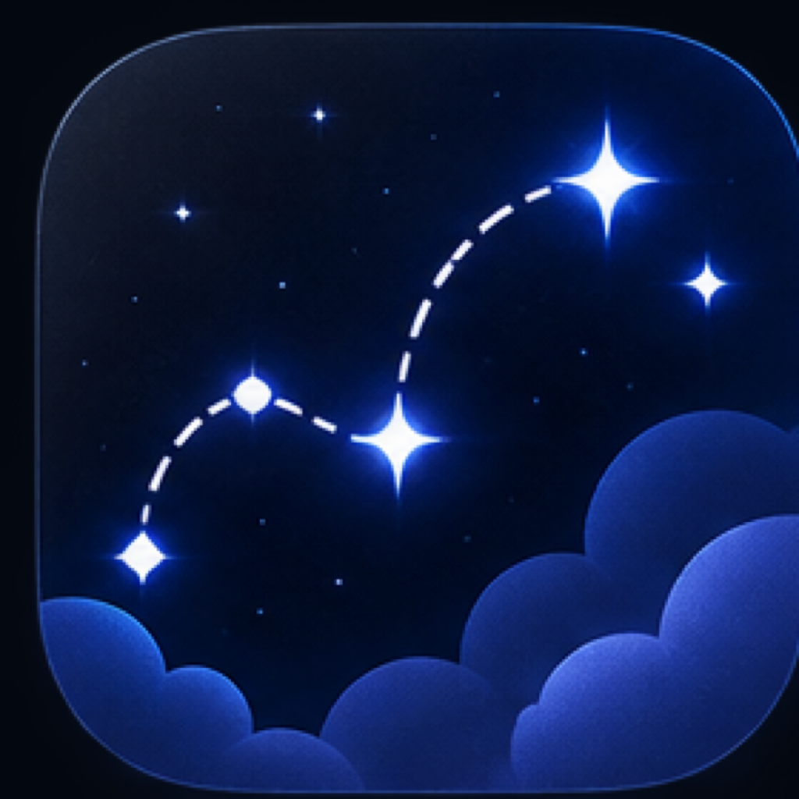

Where is my story stored?
Each story is one .wdesk project package saved wherever you choose on your Mac. It contains the structured plan and imported project images.

Writer’s Desk Plan Your StoryWriter’s Desk Support
Writer’s Desk is designed to stay simple. Start with the answers below, or email us and we’ll help.
Email supportFirst steps
Create or open a project. Choose New Project for a guided setup, Tutorials for a completed example, or Open Project for an existing .wdesk file.
Build the plan. Use Story Foundations, Timeline, Scenes, Characters, Story World, and Notes to organize what you already know.
Write wherever you prefer. Writer’s Desk holds the plan; Word, Pages, Scrivener, or another word processor can hold the manuscript.
Portable by design
Each story is one .wdesk project package saved wherever you choose on your Mac. It contains the structured plan and imported project images.
Close the project, then move its .wdesk file in Finder like any other document. Double-click it to open it again.
Yes. Duplicate the project from the File menu, copy the file in Finder, or include its folder in your normal Mac backup routine.
Yes, if that Mac has a compatible version of Writer’s Desk. Move the complete .wdesk package rather than files inside it.
Protected as you work
Writer’s Desk uses the standard macOS document system to save changes as you work. You can also press ⌘S at any time.
Choose Project Versions in the lower-left corner of the editor, name the moment, and restore it later if your plan changes direction.
Kept inside the project
Import PNG, JPEG, HEIC, WebP, or TIFF images in Reference Art, or assign them directly to Character and Story World profiles. Writer’s Desk copies the image into the project and avoids storing duplicate copies of the same file.
If an image is removed from Reference Art, Writer’s Desk also clears profile references to that image so records do not point to missing artwork.
Your desk stays connected
When scene or framework text uses the exact name of a Character or Story World record, Writer’s Desk recognizes it and adds a clickable link. Matching ignores capitalization and handles normal punctuation.
If a name does not link, check that a matching record exists and that the spelling is unambiguous. Finish editing the text to trigger an immediate refresh.
Common fixes
Click once outside the current text field, then try again. If the problem continues, save the project, close its window, and reopen the project from the launcher.
Choose Open Project and select the .wdesk file directly. Successfully opened projects are added to Recents automatically.
In Finder, search for .wdesk or the story title. Writer’s Desk does not upload projects to an account or cloud library.
Update Writer’s Desk through the Mac App Store, then try opening the project again. Avoid changing files inside the project package manually.
Keep a copy of the affected project. Email support with your macOS version, Mac model, Writer’s Desk version, and the last action you took. Do not attach private story material unless you choose to share it.
Personal support
Include your Writer’s Desk version, macOS version, Mac model, what you tried, and what you expected. Screenshots are helpful when the problem is visual.